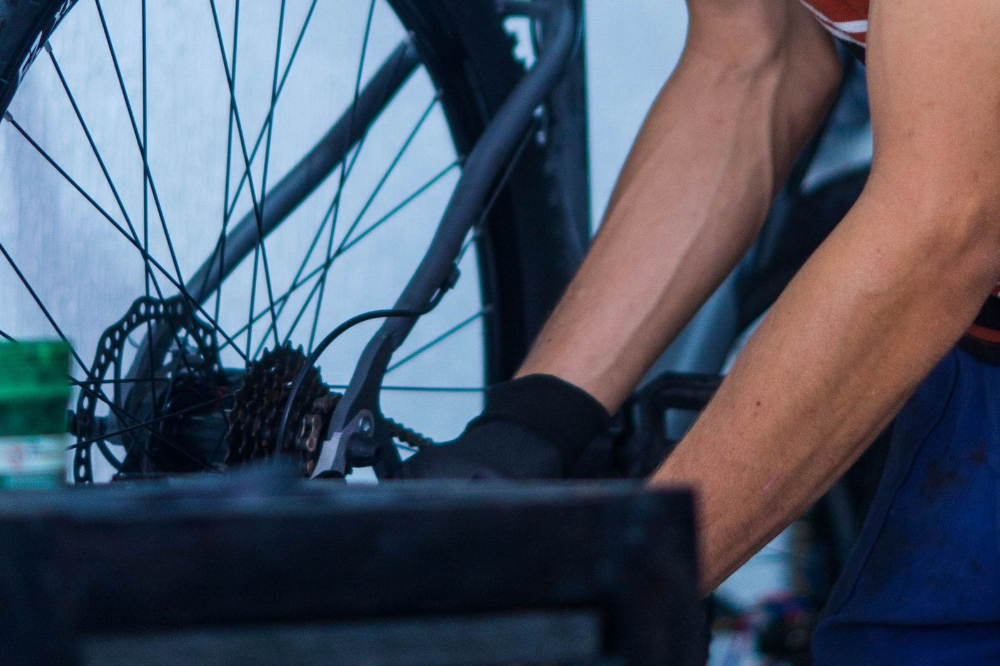

LEK.
Band & wiel
Je wilt vertrekken. Je band denkt daar anders over. Meteen plat of langzaam leeg? Vertel wat je merkt, dan weten we waar we moeten kijken.
Laat je band nakijkenVoor de fiets die je
elke dag gebruikt.

Band & wiel
Je wilt vertrekken. Je band denkt daar anders over. Meteen plat of langzaam leeg? Vertel wat je merkt, dan weten we waar we moeten kijken.
Laat je band nakijkenRemmen
Knijpen hoort genoeg te zijn. Piept je rem, loopt hij aan of moet je wel erg hard trekken? Tijd om ernaar te kijken.
Bespreek je remmenKetting & versnellingen
Trappen. Tikken. Overslaan. Niet hoe je rit moet klinken. Geef aan wanneer het gebeurt en in welke versnelling; dat helpt bij de controle.
Laat je aandrijving controlerenJe fiets hoeft niet nieuw te zijn.
Hij moet gewoon lekker rijden.
Voor een reparatie is het handig eerst te bespreken wat er speelt. Soms is een onderdeel nodig en kan de fiets niet meteen mee terug.
Vertel wanneer het probleem optreedt: tijdens remmen, schakelen of juist na een tijdje fietsen. Een korte beschrijving helpt al.
Geef aan dat je eerst wilt overleggen. We kunnen dan bespreken welke werkzaamheden nodig zijn voordat je verdergaat.
Wat voor fiets heb je en wat merk je tijdens het rijden? Zet het erbij, dan is de vraag meteen duidelijk.